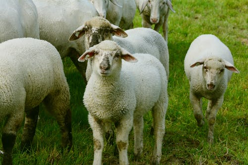

We source the finest mountain reared lamb from our specially selected partner farmers who rear grass fed sheep from the Mountain ranges in Mayo and Galway which results in the most tender of meats at the lowest of prices.
